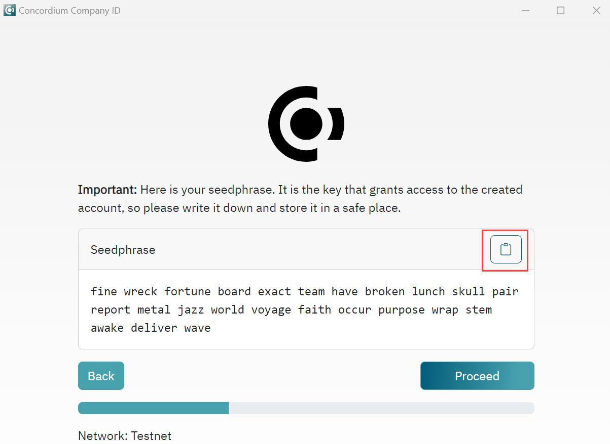
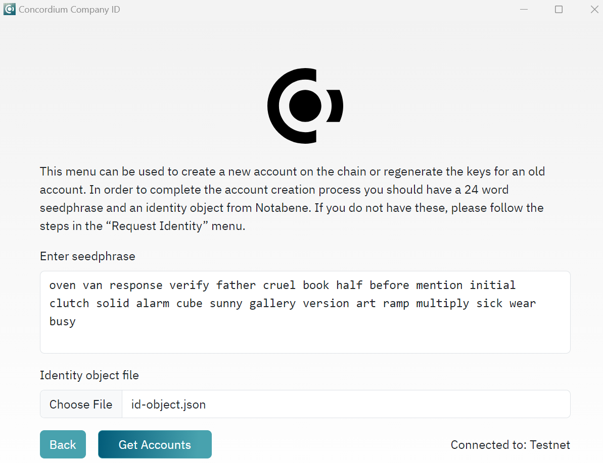

Company identity creation#
A company identity is for companies that need an identity and accounts on the Concordium blockchain, but don’t want that identity to belong to a specific person. Company identities are therefore issued with documents that identify the company and not an individual. Company identities are only relevant for a few companies, such as crypto exchanges.
You can’t use the Desktop Wallet, Concordium Wallet for Web, Concordium Wallet for Mobile, or Concordium Legacy Wallet to create a company identity. You need to use the Concordium Company ID tool, and you need to communicate directly with the identity provider (currently Notabene). This page describes Notabene’s process, including recovery of company identities.
The information below describes how to create a company identity, how to create accounts with a company identity, and how to recover a company identity. If you experience issues with the Concordium Company ID tool, please contact Concordium’s technical support via support@concordium.software.
Using the Concordium Company ID tool#
Once you have dowloaded the Concordium Company ID tool for your platform and installed it, you should choose your network, either Mainnet or Testnet. A default Concordium node URL is used, but you can enter your node URL, if desired.
Request identity#
Click Request identity.
Read the information and click Proceed.
Write down or save your seedphrase by clicking the copy button to copy your seedphrase to the clipboard and remember to go to the clipboard and save the file. Keep your seedphrase secure as you will need it to create accounts or recover the identity. Click Proceed.
Enter your seedphrase to verify that you have recorded it correctly. Click Proceed.
Click Generate request.json. The command outputs the
request.jsonfile. The request should be sent to the identity provider through a trusted channel. Store the auxiliary output securely.For Mainnet requests: Send the file to ania@notabene.id together with any other required identity data as described in the entity verification instructions.
For Testnet requests: Send the file to support@concordium.software with the subject line “Test company identity”.
When the identity has been verified successfully, you will receive an email with an identity object file named id-object.json. Store this file securely as you need it to create accounts and regenerate account keys.
Create account#
After obtaining the id-object.json identity object from the identity provider you can create accounts on the chain. The Concordium Company ID tool requires the identity object returned by the identity provider to create accounts on chain.
Create account can also be used to regenerate the keys for an old account. In this case, you would need id-object.json file again. If you have lost that file, use Identity Recovery to retrieve it so you can recover your accounts and save the account keys. After selecting Identity Recovery, enter your seed phrase. If there are accounts on chain related to the seed phrase, you will be able to store the keys of those accounts.
Click Create Account.
Enter your seedphrase in the Enter seedphrase field. In the Identity object file field click to navigate to the location of the stored
id-object.jsonfile. Click Get Accounts.On the next screen, click Create Account to create an account with this company identity. When prompted, save the
account-keys.jsonin a secure location as you will need them to interact with the account on-chain. You can click Create account again to create another account.
Note
If you are trying to recover the account-keys.json file(s), you can also use Create Account. After entering your seedphrase and selecting your id-object.json file you will see a list of account associated with this seedphrase and ID object. Click Save to save the account-keys.json for that account.
Format of the key files
Both initial account keys and subsequent account keys are stored in JSON files. The unencrypted data is a JSON record with a number of fields. This is the same format as exported by the other Concordium wallets (except Desktop Wallet). For sending transactions the fields that are relevant are:
accountKeyscontains the account keys. It has the following format:{ "environment": "testnet", "type": "concordium-browser-wallet-account", "v": 0, "value": { "accountKeys": { "keys": { "0": { "keys": { "0": { "signKey": "81e7d8e625a00b6f5b97dd8b0a97807212e6b0ceb4fd206e715b97536c83caea", "verifyKey": "03164c9e6654c1544a0e7d33780df425c695f6222fda75c047aea5186680e491" } }, "threshold": 1 } }, "threshold": 1 }, "address": "3LfTBXYtc6TEjuJiKgLpFGEtGRMPhBsKRB76Q4x91LZPWSmQ9Z", "credentials": { "0": "843785aef9446c8e5b2c6922863e49231b93fb9950909c3166e7c287357a1a495ecfbdcb6ca36ea5998fef2c9dee91f8" } } }
In this example the account has a single credential with index 0, and that credential has a single key with index 0. The private key is 03164c9e6654c1544a0e7d33780df425c695f6222fda75c047aea5186680e491 and its public key is 81e7d8e625a00b6f5b97dd8b0a97807212e6b0ceb4fd206e715b97536c83caea.
addressis the address of the account, e.g.,"address": "3LfTBXYtc6TEjuJiKgLpFGEtGRMPhBsKRB76Q4x91LZPWSmQ9Z"
Import created accounts into concordium-client#
To use the accounts created in the Concordium Company ID tool, you must use Concordium Client. You can download it here. For information about how to use it, see Concordium Client.
The account keys are primarily meant for clients to integrate into their key management solution and their software, e.g., an exchange integrating their trading platform with the Concordium chain.
However, if the account-keys.json file is not encrypted it can be imported into concordium-client with the command:
concordium-client config account import account-keys.json --name my-account
--name is mandatory and will name the account according to the given value (“my-account” in the example above).
The initial account keys cannot be directly imported into concordium-client.
Once you have created accounts, you can request CCDs for testing. To request CCDs for testing, run the following command:
curl -X PUT https://wallet-proxy.testnet.concordium.com/v0/testnetGTUDrop/3GXM6cEuAwEA47EEtFpax9PLhMWchWmkaPmNZmW1kbDaWaKBxV where you replace 3GXM6cEuAwEA47EEtFpax9PLhMWchWmkaPmNZmW1kbDaWaKBxV with the account address that should receive the CCDs.
Identity recovery#
If the identity object used to create credentials is lost, it can be recovered from the identity provider by generating a recovery request using the 24 words used when the identity was originally created. Recover identity generates an identity recovery request to be sent to the identity provider.
Click Identity Recovery.
Enter your seedphrase in the Enter seedphrase field. And click Find identities.
You see a list of accounts associated with the seedphrase. It is possible to save the account keys that can be ussed to interact with the account on the chain. Indices that are to the left of the account address are pointing to the identity index, being the first value and the account index being the second value (0,0). In the Identities to recover drop-down, select the identity you want to recover. There will always be one additional index on the list for selection to be sure that request can be generated for more than one identity. This is mainly useful in cases where first identity object was lost or unused to create accounts. Click Generate recovery request. The command outputs the
recovery-request.jsonfile. The request should be sent to the identity provider through a trusted channel. When the request has been verified successfully, you will receive an email with an identity object. Store this file securely as you need it to create accounts on the chain.
For Mainnet requests: Send the file to ania@notabene.id together with any other required identity data as described in the entity verification instructions.
For Testnet requests: Send the file to support@concordium.software with the subject line “Recover company identity”.
When the recovery request has been verified successfully, you will receive an email with the identity object file named id-object.json that you lost. Store this file securely as you need it to create accounts.